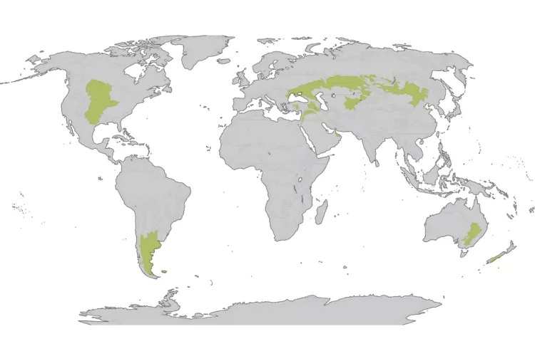
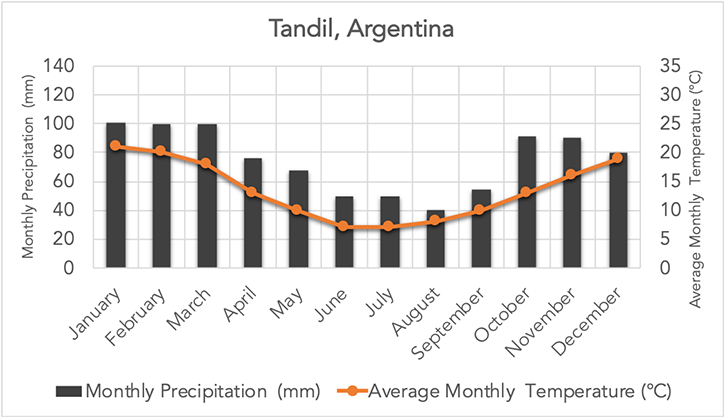
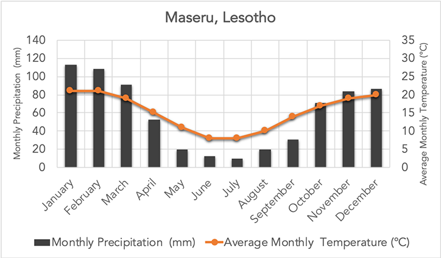

<!DOCTYPE html>
<html lang="en">
  <head>
    <meta charset="utf-8" />
    <meta name="viewport" content="width=device-width, initial-scale=1.0, maximum-scale=1.0, user-scalable=no" />

    <title></title>
    <link rel="stylesheet" href="dist/reveal.css" />
    <link rel="stylesheet" href="dist/theme/serif.css" id="theme" />
    <link rel="stylesheet" href="plugin/highlight/zenburn.css" />
	<link rel="stylesheet" href="css/layout.css" />
	<link rel="stylesheet" href="plugin/customcontrols/style.css">

	<link rel="stylesheet" href="plugin/reveal-pointer/pointer.css" />


    <script defer src="dist/fontawesome/all.min.js"></script>

	<script type="text/javascript">
		var forgetPop = true;
		function onPopState(event) {
			if(forgetPop){
				forgetPop = false;
			} else {
				parent.postMessage(event.target.location.href, "app://obsidian.md");
			}
        }
		window.onpopstate = onPopState;
		window.onmessage = event => {
			if(event.data == "reload"){
				window.document.location.reload();
			}
			forgetPop = true;
		}

		function fitElements(){
			const itemsToFit = document.getElementsByClassName('fitText');
			for (const item in itemsToFit) {
				if (Object.hasOwnProperty.call(itemsToFit, item)) {
					var element = itemsToFit[item];
					fitElement(element,1, 1000);
					element.classList.remove('fitText');
				}
			}
		}

		function fitElement(element, start, end){

			let size = (end + start) / 2;
			element.style.fontSize = `${size}px`;

			if(Math.abs(start - end) < 1){
				while(element.scrollHeight > element.offsetHeight){
					size--;
					element.style.fontSize = `${size}px`;
				}
				return;
			}

			if(element.scrollHeight > element.offsetHeight){
				fitElement(element, start, size);
			} else {
				fitElement(element, size, end);
			}		
		}


		document.onreadystatechange = () => {
			fitElements();
			if (document.readyState === 'complete') {
				if (window.location.href.indexOf("?export") != -1){
					parent.postMessage(event.target.location.href, "app://obsidian.md");
				}
				if (window.location.href.indexOf("print-pdf") != -1){
					let stateCheck = setInterval(() => {
						clearInterval(stateCheck);
						window.print();
					}, 250);
				}
			}
	};


        </script>
  </head>
  <body>
    <div class="reveal">
      <div class="slides"><section  data-markdown><script type="text/template"><!-- .slide: class="drop" -->
<div class="" style="position: absolute; left: 0px; top: 0px; height: 700px; width: 960px; min-height: 700px; display: flex; flex-direction: column; align-items: center; justify-content: center" absolute="true">

# Welcome
###### A Presentation on Wheat Farming in Australian Temperate Grasslands

notes: Hello United Nations! I feel honoured to be here today, talking about Temperate Grasslands, wheat farming practises, and how to improve both farming and the ecosystem.
</div></script></section><section  data-markdown><script type="text/template"><!-- .slide: class="drop" -->
<div class="" style="position: absolute; left: 0px; top: 0px; height: 700px; width: 960px; min-height: 700px; display: flex; flex-direction: column; align-items: center; justify-content: center" absolute="true">

# Glossary
Fallow - the tilling of land without sowing it for a season

Tussock - raised ground that is bound by roots of vegetation

Perennial - enduring, everlasting

(Merriam Webster)

notes: Before we start, I'd like to outline some terms that you will hear throughout this presentation. Fallowing is the tilling of land without sowing it in a season, tussock is a raised part of the ground that is bound by the roots of vegetation, like grass, and perennial means enduring, or everlasting. Also, please keep in mind that when I say "grasslands", I will be referring to temperate grasslands unless otherwise specified.
</div></script></section><section  data-markdown><script type="text/template"><!-- .slide: class="drop" -->
<div class="" style="position: absolute; left: 0px; top: 0px; height: 700px; width: 960px; min-height: 700px; display: flex; flex-direction: column; align-items: center; justify-content: center" absolute="true">

# What are Grasslands?
###### Part 1

- No woody plants
- Not many animals
- Plants survive for long periods of time
- Critically Endangered

notes: As you all are at the top of your profession, I'll keep this brief.

According to the NSW Office of Environment and Heritage, temperate grasslands are "dominated by large perennial tussock grasses, with broad-leafed herbs growing in the inter-tussock spaces, and an absence of woody plants". The herbs typically die off in droughts or in competition with other plants for natural resources. 

Plants growing in temperate regions tend to last for a very long time and reproduce from buds, bulbs or tubers (thick underground roots), while those in semi-arid regions are ephemeral, spending most of their life-cycle as soil-stored seed that germinate and grow after rain. 

Because of the lack of woody plants, most animals today use grasslands as foraging grounds despite past animal populations living in grasslands being quite high. These animal populations have either decreased severely, moved to other biomes, or become extinct.

According to the ACT Government, Natural Temperate Grasslands are listed in the ACT as Endangered and listed nationally as Critically Endangered. This makes them one of the most threatened Australian ecosystems.
</div></script></section><section  data-markdown><script type="text/template"><!-- .slide: class="drop" -->
<div class="" style="position: absolute; left: 0px; top: 0px; height: 700px; width: 960px; min-height: 700px; display: flex; flex-direction: column; align-items: center; justify-content: center" absolute="true">



(Bailey, 2019)
notes: Above is a map of temperate grasslands around the world. As you can see, there is a large strip of temperate grasslands throughout Eurasia, with large presence in America, and patches in Australia and New Zealand. There are small patches of grasslands in Africa, which are a bit hard to see on this map, making Antarctica the only continent that does not have any type of grasslands. (from Treehugger, 2019).
</div></script></section><section  data-markdown><script type="text/template"><!-- .slide: class="drop" -->
<div class="" style="position: absolute; left: 0px; top: 0px; height: 700px; width: 960px; min-height: 700px; display: flex; flex-direction: column; align-items: center; justify-content: center" absolute="true">



(Earth Observatory, 2020)
notes: This is a graph of temperatures in temperate grasslands in Tandil, Argentina;
</div></script></section><section  data-markdown><script type="text/template"><!-- .slide: class="drop" -->
<div class="" style="position: absolute; left: 0px; top: 0px; height: 700px; width: 960px; min-height: 700px; display: flex; flex-direction: column; align-items: center; justify-content: center" absolute="true">



(Earth Observatory, 2020)
notes: and another of Maseru {Mass-er-ou}, Lesotho {Le-sue-tue}, which is a country in South Africa. Lesotho is not a country containing temperate grasslands, but it has a drier climate than Argentina, and one more in line with Australia. Considering the temperatures are essentially the same, it can be assumed that Australia has the same temperatures, perhaps raised during el niño, but otherwise identical. The precipitation would be more in line with Lesotho, but with lower in summer.
</div></script></section><section  data-markdown><script type="text/template"><!-- .slide: class="drop" -->
<div class="" style="position: absolute; left: 0px; top: 0px; height: 700px; width: 960px; min-height: 700px; display: flex; flex-direction: column; align-items: center; justify-content: center" absolute="true">

# Wheat
###### Part 2

notes: One of the main uses of temperate grasslands is to grow wheat (Britannica, n.d.). According to Gan, Liang, Chai, Lemke, Campbell, & Zentner, 2014, Wheat (known scientifically as *Triticum aestivum*) is the third largest cereal crop after maize and rice grown on the planet. Global demands for major grains such as wheat are projected to increase by 70% by 2050. 

There are four basic types of wheat, the first two being spring wheat and winter wheat and hard and soft wheat varieties for both. Winter wheat is seeded during autumn, grows slowly during winter, sprouts during spring, and is harvested in early summer. If winters are too cold or windy to grow winter wheat, spring wheat is seeded at the start of spring and harvested in late summer. Considering the minor differences between crops when talking about farming practises, this presentation will encompass both winter and spring wheat. Hard and soft wheat are used when baking. Hard wheat is high in gluten and is typically used when making bread whilst soft wheat is high in starch and low in gluten. There are over 30 subspecies of wheat in total, but we are not covering that today (Encyclopædia Britannica, n.d.).
</div></script></section><section  data-markdown><script type="text/template"><!-- .slide: class="drop" -->
<div class="" style="position: absolute; left: 0px; top: 0px; height: 700px; width: 960px; min-height: 700px; display: flex; flex-direction: column; align-items: center; justify-content: center" absolute="true">

</img>
(Statista, 2023)

notes: According to Statista, over 778 million metric tons of wheat were produced in the 2021/22 financial year, an increase of 4 million tons compared to 2020/21. Above is a graph of wheat stocks between 2012 and 2023. Wheat stocks have increased by 115 million tons (or around 60%) since 2012.
</div></script></section><section  data-markdown><script type="text/template"><!-- .slide: class="drop" -->
<div class="" style="position: absolute; left: 0px; top: 0px; height: 700px; width: 960px; min-height: 700px; display: flex; flex-direction: column; align-items: center; justify-content: center" absolute="true">

# The Problem
###### Part 3

notes: In semiarid areas (like Australia), wheat is traditionally grown in a wheat-fallow or wheat-wheat-fallow cropping system. During fallow season, the soil is left unplanted for the season and is regularly tilled to control weeds. According to Gan. et al., "It is believed that summerfallowing allows a large proportion of rainfall to be conserved in the soil profile, which is available for the crops grown in the following year. Also, the soils in the fallow period release nitrogen via mineralization of soil organic matter, benefiting the crops grown in subsequent years". 

The problem is with the machinery used to till the soil. The ground is tilled multiple times per season, leading to increased fossil fuels released during the season. Soil organic matter can also be depleted with high frequencies of fallowing, causing degradation of soil quality and increased soil erosion (Gan. et al.).
</div></script></section><section  data-markdown><script type="text/template"><!-- .slide: class="drop" -->
<div class="" style="position: absolute; left: 0px; top: 0px; height: 700px; width: 960px; min-height: 700px; display: flex; flex-direction: column; align-items: center; justify-content: center" absolute="true">

# Solution?
Not exactly

notes: Reducing how often farmers summerfallow, rotating other crops through seasons and using more inorganic fertilisers and chemicals have been shown to increase crop yields compared to wheat-fallow or wheat monoculture systems. However, the increased use of inorganic fertilisers and pesticides increases greenhouse gas emissions, which make them unsustainable (Gan. et al.). Combined with evidence showing that crop yields can suddenly decrease over long periods of time make these methods unappealing to implement for farmers.
</div></script></section><section  data-markdown><script type="text/template"><!-- .slide: class="drop" -->
<div class="" style="position: absolute; left: 0px; top: 0px; height: 700px; width: 960px; min-height: 700px; display: flex; flex-direction: column; align-items: center; justify-content: center" absolute="true">

# Re-assess
###### Part 4

1. Using crop rotation systems
2. Using soil tests
3. Using organic fertilisers
4. Using legumes to replace fallows

`$\ce{ -252.67kg CO2 eq ha^{−1}}$` average over 25 years

notes: Gan. et al. performed a 25 year experiment on reducing carbon emissions, where the following strategies were trialed: "(i) the choice of crop rotation systems, (ii) the use of soil tests to determine soil residual Nitrogen levels, (iii) the application of fertilisers to balance the nutrient supplies and plant requirements and (iv) the use of grain legumes to replace the fallow phase of the commonly used crop rotations or to diversify the wheat monoculture system". 

The results of these tests showed that implementing these methods eliminated carbon emissions, leading to a total average carbon footprint of `$\ce{ -252.67kg CO2 eq ha^{−1}}$`. This is supported by several other studies, including one from New South Wales, Australia, where implementing changing fertiliser usage patterns alongside other methods reduced carbon emissions by 50kg CO2 -e per tonne of wheat, whilst simultaneously increasing yields from 3.5 t/ha to 5 t/ha (Brock. et al., 2012).
</div></script></section><section  data-markdown><script type="text/template"><!-- .slide: class="drop" -->
<div class="" style="position: absolute; left: 0px; top: 0px; height: 700px; width: 960px; min-height: 700px; display: flex; flex-direction: column; align-items: center; justify-content: center" absolute="true">

# Solutions

1. Reduce summerfallowing
2. Crop rotation
3. Efficient fertilisers
4. Soil testing

notes: There are four clear solutions, that implement by farmers can significantly reduce the impact of wheat farming on temperate grasslands and global emissions footprints. Firstly, reduce summerfallowing. Reducing summerfallowing stops one of the biggest threats to grasslands, degregation of soil quality and reducing carbon emissions. Sumerfallowing can be replaced with other crops instead of wheat, like legumes, which can increase farmer profits and increase crop diversity, leading to a win-win-win situation for the economy, the environment, and the consumer, as there are more options available. This is the second solution, including crop rotation. Considering that wheat is typically grown as a monoculture crop, the win-win-win situation mentioned above applies here.

The third solution is to use fertilisers more effectively. By switching to organic fertilisers that lower greenhouse gas emissions and spacing fertiliser usage allows the crops to benefit from a constant fertiliser supply, rather than over- or under-fertilising the crop. This also helps mitigate the impact on the grasslands as there are less chemicals being pumped into the soil, which could damage native flora and fauna. The fourth solution is to utilise regular soil testing. This can help farmers monitor the crops, allowing them to use fertiliser effectively, whilst ensuring that damage is not done to the ecosystem. The government could also require farmers to soil test regularly to ensure that the chemicals used stay below a safe limit.
</div></script></section><section  data-markdown><script type="text/template"><!-- .slide: class="drop" -->
<div class="" style="position: absolute; left: 0px; top: 0px; height: 700px; width: 960px; min-height: 700px; display: flex; flex-direction: column; align-items: center; justify-content: center" absolute="true">

# Conclusion

notes: By implementing these solutions and spreading awareness about these harmful methods, we can help improve farming practices for wheat and maintain and rehabilitate this critically endangered biome. Thank you for having me, and enjoy the rest of your day.
</div></script></section><section  data-markdown><script type="text/template"><!-- .slide: class="drop" -->
<div class="" style="position: absolute; left: 0px; top: 0px; height: 700px; width: 960px; min-height: 700px; display: flex; flex-direction: column; align-items: center; justify-content: center" absolute="true">

# References

References available online at https://marcdonaldoconnor.github.io/presentations/food-security/references. 

Script available online at https://marcdonaldoconnor.github.io/presentations/food-security/script.
</div></script></section></div>
    </div>

    <script src="dist/reveal.js"></script>

    <script src="plugin/markdown/markdown.js"></script>
    <script src="plugin/highlight/highlight.js"></script>
    <script src="plugin/zoom/zoom.js"></script>
    <script src="plugin/notes/notes.js"></script>
    <script src="plugin/math/math.js"></script>
	<script src="plugin/mermaid/mermaid.js"></script>
	<script src="plugin/chart/chart.min.js"></script>
	<script src="plugin/chart/plugin.js"></script>
	<script src="plugin/customcontrols/plugin.js"></script>
	<script src="plugin/reveal-pointer/pointer.js"></script>

    <script>
      function extend() {
        var target = {};
        for (var i = 0; i < arguments.length; i++) {
          var source = arguments[i];
          for (var key in source) {
            if (source.hasOwnProperty(key)) {
              target[key] = source[key];
            }
          }
        }
        return target;
      }

	  function isLight(color) {
		let hex = color.replace('#', '');

		// convert #fff => #ffffff
		if(hex.length == 3){
			hex = `${hex[0]}${hex[0]}${hex[1]}${hex[1]}${hex[2]}${hex[2]}`;
		}

		const c_r = parseInt(hex.substr(0, 2), 16);
		const c_g = parseInt(hex.substr(2, 2), 16);
		const c_b = parseInt(hex.substr(4, 2), 16);
		const brightness = ((c_r * 299) + (c_g * 587) + (c_b * 114)) / 1000;
		return brightness > 155;
	}

	var bgColor = getComputedStyle(document.documentElement).getPropertyValue('--r-background-color').trim();
	var isLight = isLight(bgColor);

	if(isLight){
		document.body.classList.add('has-light-background');
	} else {
		document.body.classList.add('has-dark-background');
	}

      // default options to init reveal.js
      var defaultOptions = {
        controls: true,
        progress: true,
        history: true,
        center: true,
        transition: 'default', // none/fade/slide/convex/concave/zoom
        plugins: [
          RevealMarkdown,
          RevealHighlight,
          RevealZoom,
          RevealNotes,
          RevealMath.MathJax3,
		  RevealMermaid,
		  RevealChart,
		  RevealCustomControls,
	      RevealPointer,
        ],


    	allottedTime: 120 * 1000,

		mathjax3: {
			mathjax: 'plugin/math/mathjax/tex-mml-chtml.js',
		},
		markdown: {
		  gfm: true,
		  mangle: true,
		  pedantic: false,
		  smartLists: false,
		  smartypants: false,
		},

		mermaid: {
			theme: isLight ? 'default' : 'dark',
		},

		customcontrols: {
			controls: [
			]
		},
      };

      // options from URL query string
      var queryOptions = Reveal().getQueryHash() || {};

      var options = extend(defaultOptions, {"width":960,"height":700,"margin":0.04,"controls":false,"progress":true,"slideNumber":false,"transition":"none","transitionSpeed":"default"}, queryOptions);
    </script>

    <script>
      Reveal.initialize(options);
    </script>
  </body>

  <!-- created with Advanced Slides -->
</html>
